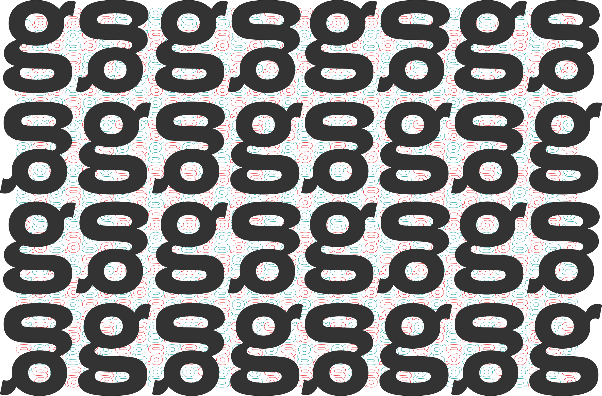

Milou est un caractère de titrage pour apprendre à lire, dont la particularité est d’être unicamérale. C’est un caractère généreux, volontairement articulé, pour la composition de courtes phrases.
Oni, à l’inverse, est une famille de caractères pour la lecture prolongée dans un environnement en basse résolution. Elle puise ses influences autant dans l’écriture brisée que dans le style classique des didones.
- Milou
- Oni
- Oni-minot
- appendice.
La police pour apprendre à lire - appendice.
Le confort de lecture en basse résolution